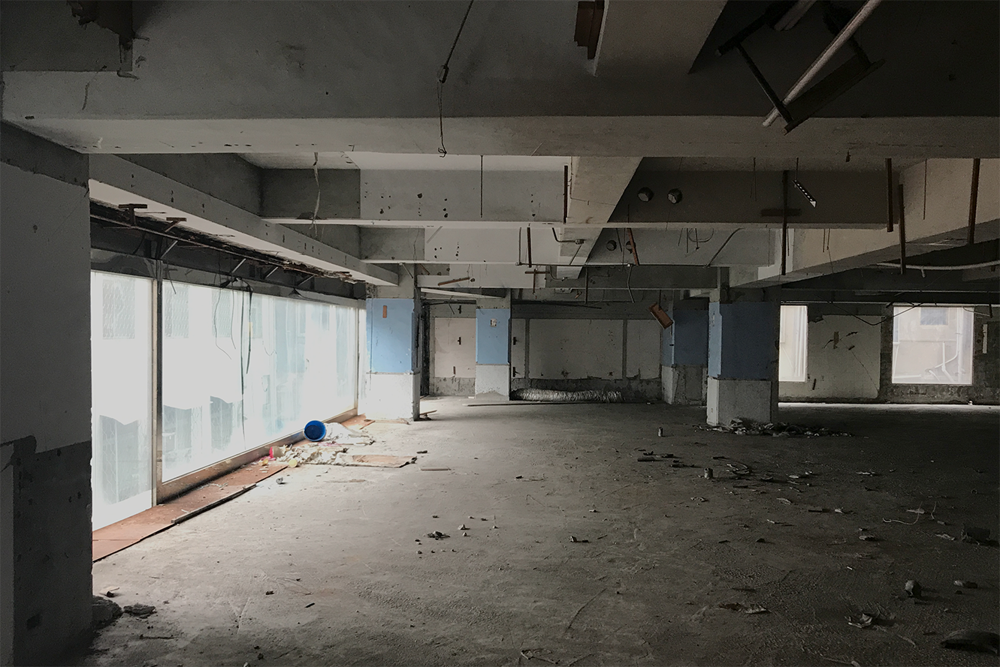
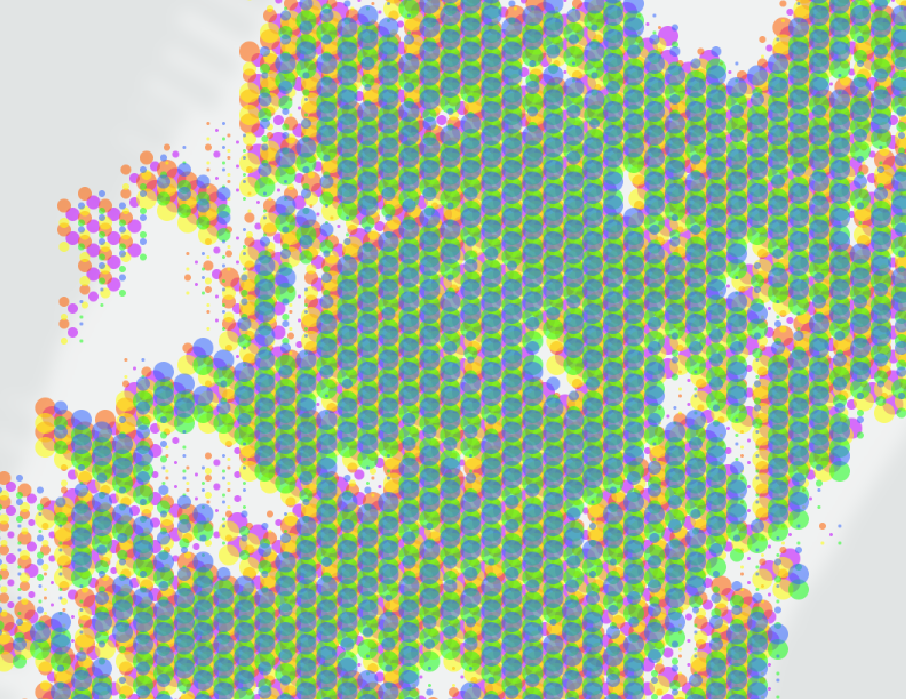
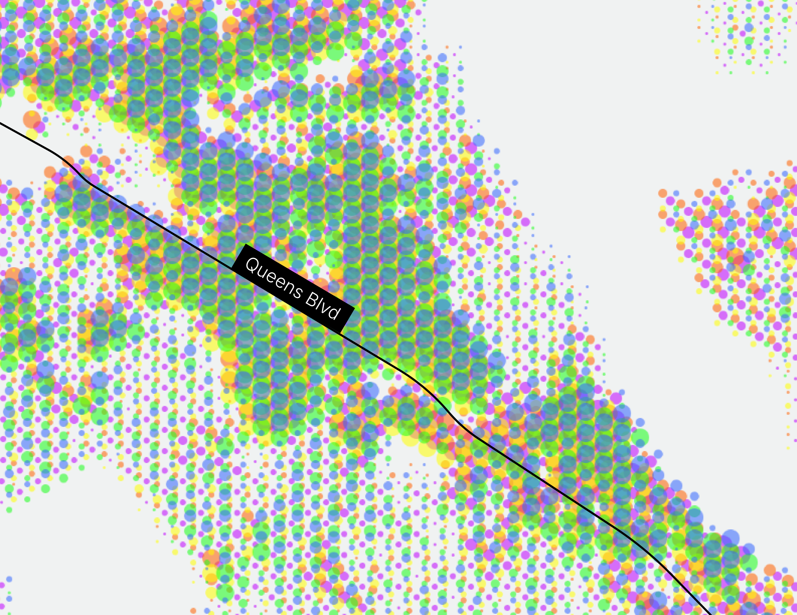
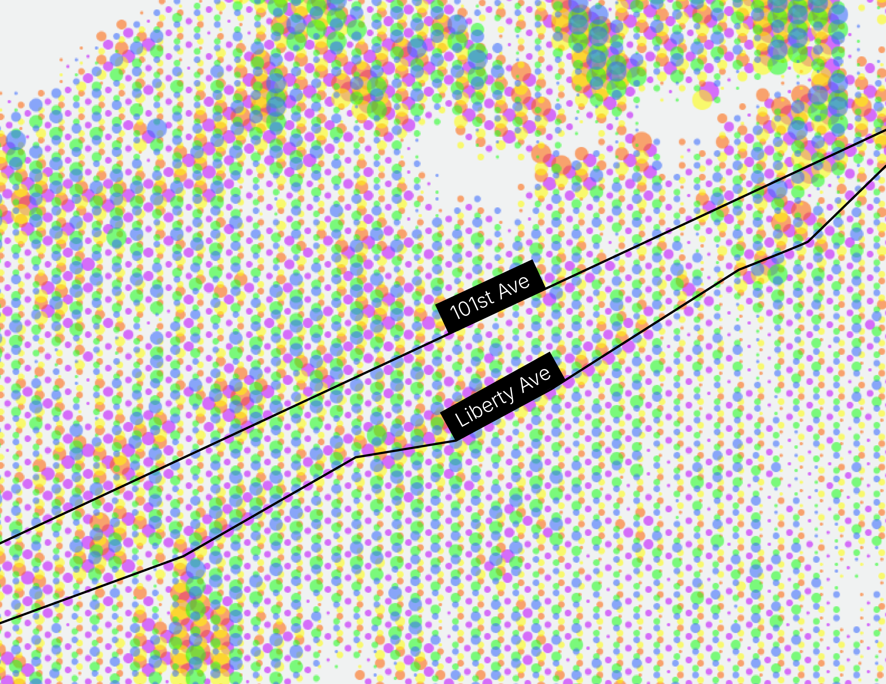
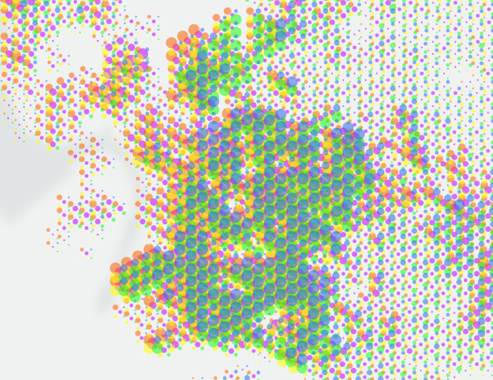
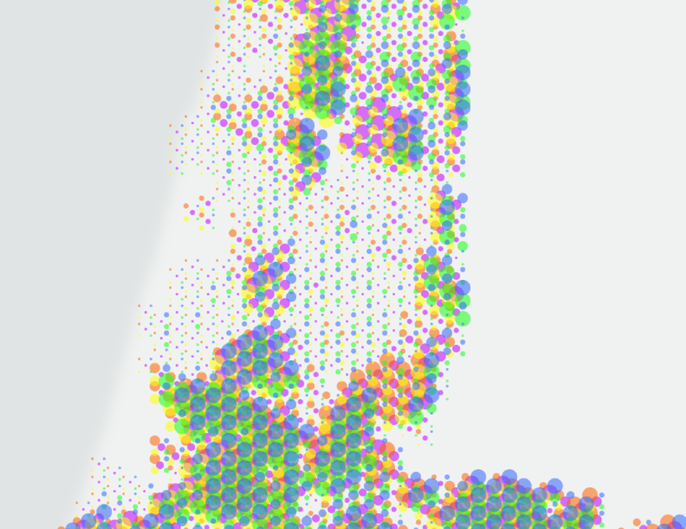
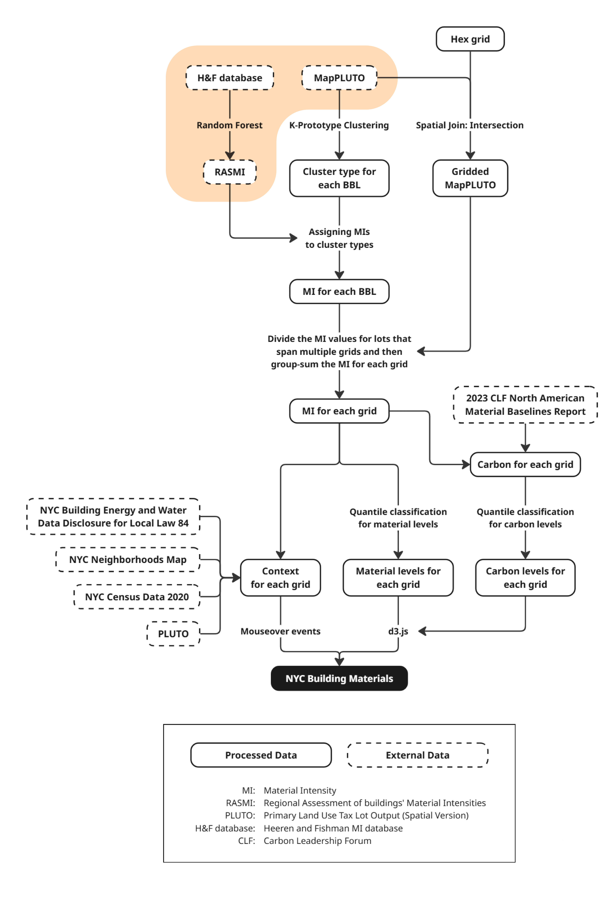
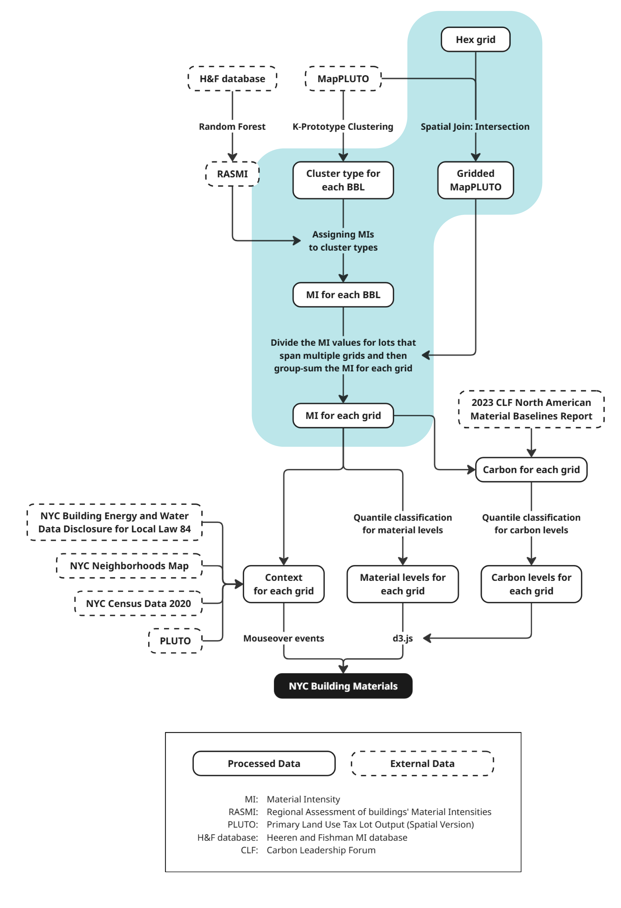
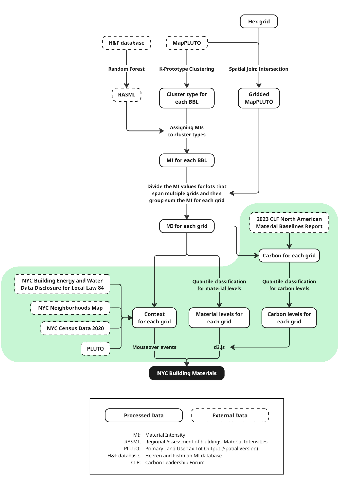

Hao Lee is an architect and urban data analyst based in New York City.
This article is part of NYC Building Materials, an academic project developed in the Computational Design Practices program at Columbia University's Graduate School of Architecture, Planning and Preservation (GSAPP).
June 21, 2025
Each building tells a story of material: what was used, where it came from, and what it displaced. Yet the scale of these materials is rarely visible to the public eye.
So how do we begin to see the materials that make our homes, neighborhoods, and cities?
While conducting field research for my undergraduate thesis in architecture in 2019, I turned my attention to the aging theater complexes of Taichung, Taiwan’s Central District — once the city’s bustling entertainment hub. Most of these buildings, constructed in the 1950s and ’60s, fell into disuse or were demolished by the early 2000s, casualties of shifting consumer habits, the rise of modern shopping malls, and the lingering impact of the SARS outbreak that struck Taiwan in 2003.
I ended up talking my way in an abandoned theater by playing my student card with the security guard to get 30 minuts inside. I wandered the whole building, floor by floor, from the basement to the rooftop.
It felt like I was slipping through layers of forgotten slices of life. The furniture was looted or trashed, fixtures torn out, and what remained were surfaces: dust, tiles, textures, the bare bones of the hustle that once was. These were building materials that couldn't be salvaged.

The emptied-out theater complex.
Now that the building has been demolished, taken apart and hauled away (in 2020, just one year after I graduated,) I feel an urge to tell a story. One about the identity of a city and how it’s shaped by its parts — its buildings. People come and go, interiors shift, and memories change, but the materials that linger hold a kind of silent presence. That deserves to be celebrated, and I knew, someday I'd have the opportunity to do so.
Six years later, I’m in New York City. A metropolis shaped as much by construction as by demolition. And here, the question of how we celebrate building materials feels as expansive as the skyline itself.
Thanks to the work of many talented individuals and civic teams, the city now boasts a growing number of public-facing tools: from city-led efforts like the NYC Construction Dashboard to independent projects like Sidewalk Widths NYC by Meli Harvey . That momentum got me thinking: perhaps I could build a visualization of my own while I’m here.
Over the past two semesters of graduate study, I’ve been doing just that — leveraging open data and machine learning to estimate and visualize the building materials that make up New York City:
NYC Building Materials is a platform designed to offer a new way to explore the city through a material lens: a living, interactive map that visualizes the footprints of what we build and what we erase. By layering data, design, and curiosity, this project invites us to reintroduce ourselves to the built environment.
As of 2025, NYC Building Materials has collected and estimated the building materials of over 800,000 buildings in New York City.
The map is coded in five colors, each representing a major category of building material: blue for timber, green for glass, yellow for concrete, red for masonry, and purple for steel.
Each dot corresponds to a 100-by-100-meter (328-by-328-foot) hexagonal area, illustrating the dominant material used within that zone. When layered together, the colors begin to reveal patterns; subtle shifts in construction logic and material preference that, when viewed alongside other datasets, shed light on the forces shaping New York City's physical fabric. The result is a portrait of the city’s built environment that’s typically hidden in plain sight.
Here's one of the patterns that got my attention immediately after rendering out the map:
Straddling the border of Queens and Brooklyn are neighborhoods like Maspeth, Blissville, and East Williamsburg; areas often overlooked in media and their urban fabric less defined than their neighbors.
But viewed through the lens of building materials, they emerge as something striking: a vast orange crater, set against a sea of blue, green, and purple.
Filter out buildings taller than two stories, and the pattern sharpens. The crater reveals itself as a dense concentration of low-rise masonry and concrete structures.
Exclude postwar buildings instead, and another insight comes into focus. Compared to much of New York City, this “crater” is not just an outlier in form, but in age: its buildings are, in fact, actually newer than those in many surrounding neighborhoods.
New York City is, by any measure, an old city. More than 70 percent of its buildings were constructed before 1940. Yet the structures we often label as “old” or “dangerous” rarely match the reality on the ground. In neighborhoods like Blissville, Maspeth, and East Williamsburg, what remains are not brownstones or walk-ups, but factories, depots, and warehouses, aged not just by time, but by decades of zoning shifts and development pressures.
This “orange crater,” as it appears on the material map, forms a microcosm of its own; one that defies conventional borders and redefines how we think about neighborhood identity.
Colors
to understand business and gentrification
After experiencing the rush of watching a data story slowly take shape, I did what any curious outsider to New York might do: I took some liberties. I began classifying and interpreting patterns in the map.
Color, the most immediate visual cue, quickly revealed regional characteristics across the city.
For starters, dense clusters of green often point to business districts dominated by glass façades:

Midtown
Chelsea
In contrast, areas shaded in purples tend to show neighborhoods that have undergone less gentrification: places where a more eclectic mix of materials, and therefore colors, signal older and less commercially homogenized (lots of glass/green) development.
Corona
Jackson Heights
Elmhurst
In areas with industrial roots, the map shifts to hues of yellow, orange, and purple — warehouses and brick buildings dominating the landscape. Blue, representing timber, is often absent from these interiors, revealing a material pattern shaped by durability and scale instead of softness or domesticity.
Gowanus
Red Hook
Park Slope
Cuts
to divide or concentrate
Like strokes of watercolor brushed across the city, these patterns often trace the paths of highways or the LIRR (looking at you, Robert Moses.) Others reveal clusters of development hugging arterial roads or unfurling along subway lines.
While the BQE slices cleanly through the city’s patchwork of materials, other corridors are tinged with orange, a signal of dense brick construction and fewer residential units, often lining noisier, more industrial fabrics.
Sunset Park
Bay Ridge
Dyker Heights
In other cases, roads act less as dividers and more as magnets — drawing developers and businesses to cluster along their edges, shaping corridors of concentrated growth.

Forest Hills Gardens
In the city’s lower-density pockets, ribbons of purple or orange often slice through a sea of blue, marking the presence of public or commercial buildings set against a backdrop of timber-framed residential structures.

Richmond Hill
South Richmond Hill
Clusters
of artificial and organic sorts
On the map, you can also spot clusters of color that look like strings of beads along unseen paths. These are often NYCHA buildings or gated communities with highly uniform building materials, often established along subway lines or major roads.
As of June 2025, the dataset doesn’t yet distinguish between public and private ownership, so some colors may be less accurate. Still, it offers another way to see how and where building materials are concentrated across the city.
Fresh Meadows
Oakland Gardens
In areas with more organic growth, like Flushing, material clusters tend to have softer, less defined edges.
These formations often show marine-colored cores surrounded by orange perimeters, suggesting denser residential towers or newer developments at the center, wrapped by older, lower-rise structures on the outskirts.

Downtown Flushing
Murray Hill
Linden Hill
Among the most striking and rare patterns are what could be called “anti-clusters”: areas that register significantly lower material intensity than their surroundings.
These pockets, like Fieldston in the Bronx or Sea Gate in Brooklyn, often reflect neighborhoods where building typologies are tightly regulated, resulting in uniform, low-density developments that visually stand apart from the fabric around them.

Fieldston
Riverdale Park
Data As A Platform
thanks, Civ and RimWorld
Beyond visualizing the data, one of the project’s core goals is to equip users with tools to interpret the map, to add layers of context and meaning. As a longtime gamer, I drew inspiration from the user interfaces and design logic of titles like Civilization and RimWorld, borrowing elements from their strategy mechanics to shape the interactive features of NYC Building Materials.
As of June 2025, the platform has:
A dynamic hover feature allowing you to explore each tile’s material composition and urban characteristics, updating in real time as the cursor moves across the map.
A simple filtering tool to sort buildings by height, year of construction, and the embodied carbon values of their materials.
And an “X-ray” feature to overlay the material map with satellite imagery, transit networks, zoning boundaries, and more.
Following several rounds of cohort testing, I introduced “story markers” — small points on the map that surface quotes from New York Times articles tied to specific neighborhoods, streets, or landmarks.
When hovered over, each marker expands to reveal additional context, offering a narrative layer that connects the material data to lived experience and local history.
Story markers, in the form of sourcing quotes from NYT articles.
Embodied Carbon
and where to find them
Few topics command more attention in architecture and planning today than sustainability, and at the heart of that conversation is embodied carbon. In my final semester at Columbia GSAPP, under the guidance of David Benjamin, I added an embodied carbon layer to this platform, aiming to visualize not just how much material is used in our buildings, but what kind of impact it carries.
Visually, this layer shifts the story from simply how much material is used to what kind of impact it has, and how that varies across neighborhoods.
I also introduced a “carbon per person” mode, which divides each hexagon’s embodied carbon by the number of residents and workers within it. To explore whether central business districts (CBDs) are truly wasteful on a material level, or whether they may, in fact, be more efficient per capita than we assume. The goal here is to open up new ways of thinking about urban efficiency, equity, and embodied carbon as a shared metric.
Material weights, embodied carbon, and embodied carbon per person.
One of the more striking insights comes from the carbon-per-person view. One big example is Midtown. We often associate CBDs with wasteful building materials, but if we take the residents and workers into account, the areas all but disappear in the visualization, and instead other less material-intensive neighborhoods pop up:
Long Island City
Midtown
Long Island City
Midtown
Embodied carbon (top) and embodied carbon per person (bottom).
Because of the dense concentration of both workers and residents, their embodied carbon impact is effectively shared more broadly.
In contrast, lower-density neighborhoods show much higher carbon-per-capita values, raising questions about what we consider “efficient” or “wasteful” from a planning perspective.
The Technical Part
how did I actually gather the material data?
NYC Building Material's data structure.
Building Information Modeling, or BIM, is now a standard tool in architecture, allowing designers, builders, and clients to manage materials with precision. New York City also offers a rich trove of open-source resources through NYC Open Data, providing access to thousands of datasets across agencies and neighborhoods. But despite these tools, one thing was missing: data on building materials at the scale of the city itself.
So I decided to make my own data.



The visualization's data takes MapPLUTO (each building's basic properties) as a basis and introduces RASMI
Then, the data was processed into building material intensities (MI) for each hexagonal grid.
Finally, external maps and data overlays are brought into the platform for context and comparison.
How About...
applying NYC Building Materials to other cities?
In theory, I'd do it in a heartbeat. In practice, it takes more work. Each city has its own logic: shaped by data availability, planning history, and the ways people have built over time.
It starts with data. To begin mapping a city’s material footprint, we need access to a comprehensive building dataset: basic details about each structure, from size to construction type. That’s the foundation.
Then comes context. Understanding local patterns, architectural typologies, and historical shifts gives meaning to the data. In New York City, for instance, over 90 percent of buildings are three stories or fewer. That fact shaped how I categorized the buildings and materials. But in a city like Taipei, where five-story walkups dominate (often with added rooftop structures), a different system of classification is needed.
Still, the rise of GIS in government and planning means more cities are making this kind of data available. That opens the door for scaling the project: adapting NYC Building Materials to new geographies, each with its own layers of material history. With the right datasets and local insight, this framework could travel.
Methodology
NYC Building Materials uses a combination of open data from NYC Open Data, in this case, MapPLUTO for buliding properties like height, number of stories, and building type; and RASMI, short for Regional Assessment of buildings’ Material Intensities, by Tomer Fisherman et al., for the material composition of buildings. These compositions include the building's structure, facade, and interior materials, but do not take furnitures and foundations/piles into account.
I then used Python's scikit-learn library to cluster (in this case, k-prototype for a mixture of data types) the buildings into six major categories and several subcategories based on their properties, and then applied the RASMI data (all median values) to each cluster to estimate the material composition of each building.